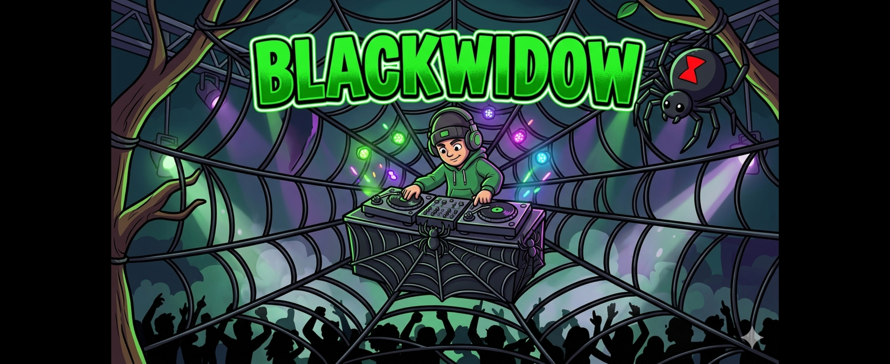

Hello everyone — my name is DJ BLACKWIDOW, and I'm a DJ and music producer. I lost my wife of 18 years to cancer, and I express my pain and grief through music. Me and my cats get through it together — you'll see them on the decks in the videos below. I hope everyone loves it and can relate — it's all about turning negatives into positives. Step into the web.
I Didn't Lose My Soul
Keep on That Road
My Love
I Miss You So Much
My Soul Is Music (Soul of Life)
Music Soul Soul
Soul Is Rhythm
Soul In It
Soul In The Music
When I Hear That Soul
Sound of My Soul
Blackwidow Vision
Black Widow Grin
Black Widow Web
Music Is Soul
Bassline Baseline
Bell Drop
Darkness Dancefloor
Rhythm and Soul
Same Thing Tonight
Darkness Dancefloor
Dirt-Under Hands
Pianoness
Making Music Gets Me Through
Heard something you liked? Tell me — messages come straight to my inbox.
💚 Message sent — thank you!
Say it loud — messages here stay on the board for everyone.
Bookings: jbrb8106@googlemail.com